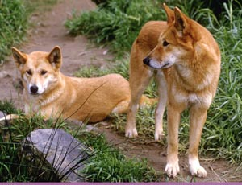
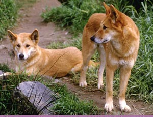

Sidebar
Dingo
Der australische Windhund ist der Dingo, der vermutlich von den Ureinwohnern nach Australien eingeführt wurde. Im laufe der Jahre wurde er immer weiter in das Landesinnere zurückgedrängt. Er kann nicht bellen und ist meist recht scheu. Manchmal beobachtet man ihn auf Campingplätzen beim durchstöbern von Abfalleimern. Der Dingo kommt in New South Wales und im südlichen Südaustralien auf Grund des Dingo-Zaunes nicht vor. Der Zaun mit einer Länge von 9.600 km soll die Schafzucht im Süden schützen - ein Nebeneffekt ist aber auch, dass hier eine vergleichsweise reiche Tierwelt mit einheimischen Tierarten bewahrt werden konnte. Sein Nicht-Vorhandensein hat beispielsweise auch Tasmanien und Kangoroo Island eine reiche Tierwelt an einheimischen Gattungen bewahrt.
 

15.11.2011